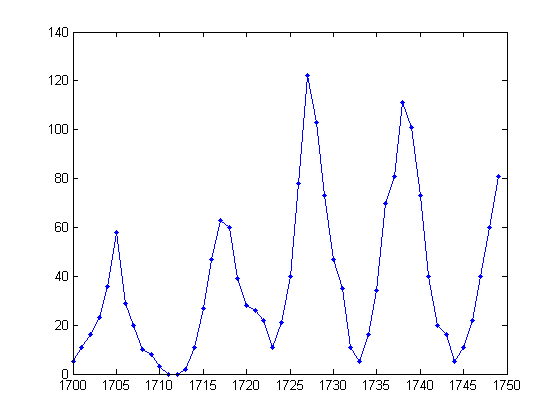
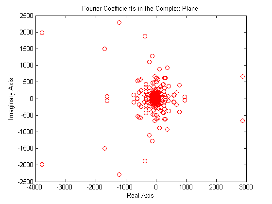
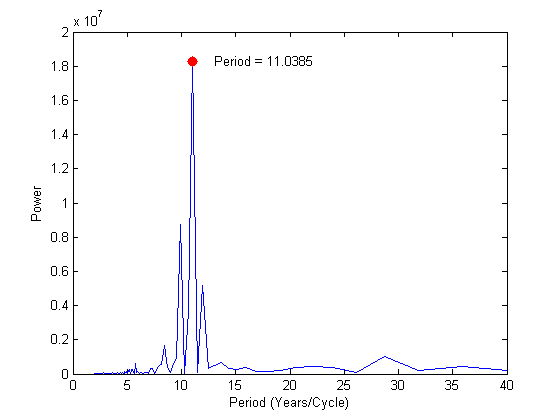

FFT の使用
このデモでは、過去 300 年にわたって太陽の黒点活動における変化を分析するために関数 FFT を使用します。
太陽の黒点は、約 11 年周期で活動がピークになります。これを確かめてみましょう。これは黒点の数とサイズの両方を計測するチューリッヒ相対黒点数と呼ばれるデータ量をプロットしたものです。天文学者は、およそ 300 年の間この量を表にしてきました。
load sunspot.dat year=sunspot(:,1); relNums=sunspot(:,2); plot(year,relNums) title('Sunspot Data')

これは、初めの 50 年を取り出して見たものです。
plot(year(1:50),relNums(1:50),'b.-');
 信号処理の基本的な手段として、FFT (高速有限フーリエ変換) があります。黒点データの FFT を取得するには、以下のように入力します。
Y の最初の要素 Y(1) は、単なるデータの和なので取り除くことができます。
Y = fft(relNums); Y(1)=[];
Y で与えられるフーリエ係数の複素平面上での分布グラフはすっきりしていますが、解釈するのは困難です。Y のデータをより実用的な方法で調査する必要があります。
plot(Y,'ro') title('Fourier Coefficients in the Complex Plane'); xlabel('Real Axis'); ylabel('Imaginary Axis');
Y の複素ゲインの二乗は「パワー (power)」と呼ばれ、周波数に対するパワーをプロットしたものは「ピリオドグラム (Periodogram)」と呼ばれます。
n=length(Y); power = abs(Y(1:floor(n/2))).^2; nyquist = 1/2; freq = (1:n/2)/(n/2)*nyquist; plot(freq,power) xlabel('cycles/year') title('Periodogram')

周期/年数でのスケールでは少し不便です。年数/周期のスケールでプロットし、1 周期の長さを推定しましょう。
plot(freq(1:40),power(1:40))
xlabel('cycles/year')

これは、便宜上、周期に対するパワーをプロットしたものです (ただし、周期 = 1./周波数)。予測通り、約 11 年の長さの周期になっていることがよくわかります。
period=1./freq; plot(period,power); axis([0 40 0 2e+7]); ylabel('Power'); xlabel('Period (Years/Cycle)');

最後に、パワーの最も大きい周波数を抽出することで、もう少し正確に周期の長さを修正できます。赤い点がその点を表しています。
hold on; index=find(power==max(power)); mainPeriodStr=num2str(period(index)); plot(period(index),power(index),'r.', 'MarkerSize',25); text(period(index)+2,power(index),['Period = ',mainPeriodStr]); hold off;